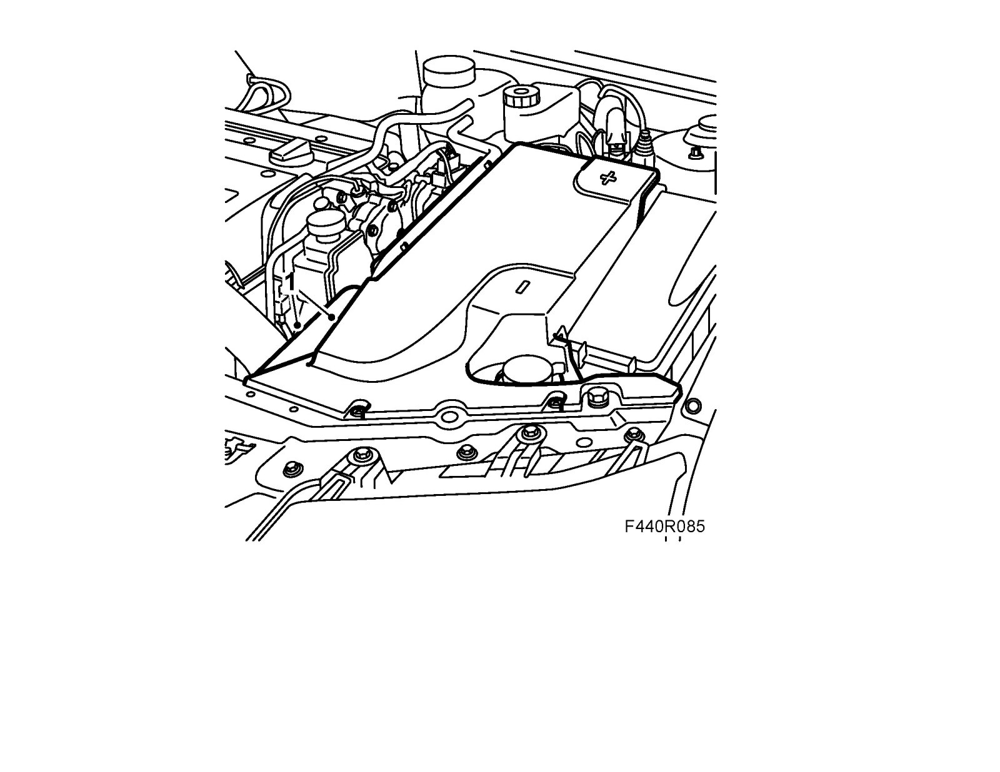
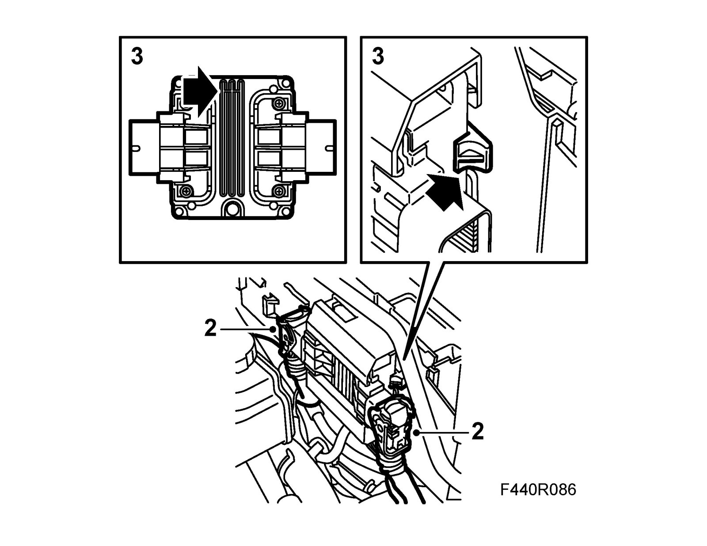
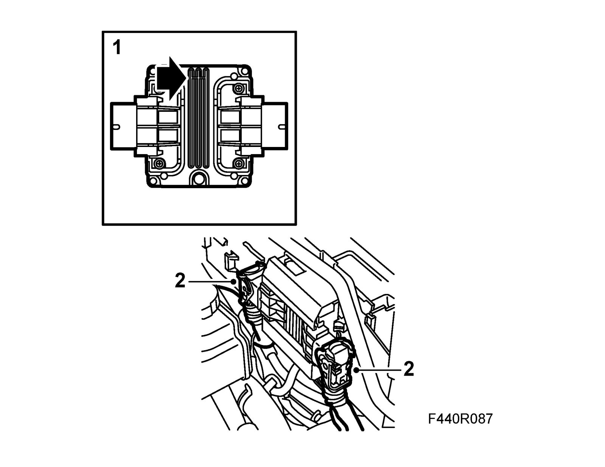
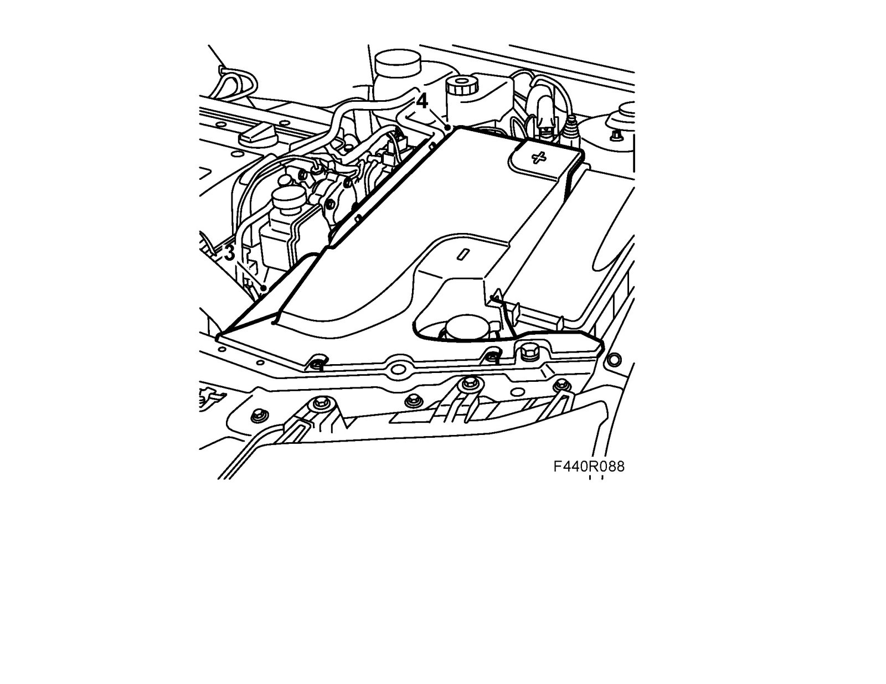

Transmission Control Module, TCM
Transmission control module, TCMTo remove
Before removal, see Before changing a control module.
1. Remove the battery cover and the battery cooling pipe.

Important
Take care when releasing the locking mechanism on the connector so as not to damage the connector. Pull the halves straight apart to avoid bending the pins. For further information regarding connectors, refer to Connectors, handling and inspection.
2. Unplug the control module connector.

3. Remove the control module. Make a note of how it is mounted for correct refitting.
To fit
1. Fit the control module.

Important
Take care when plugging in the connector so as not to damage or press out the pins/sleeves in the connector. For further information regarding connectors, refer to Connectors, handling and inspection.
2. Plug in the connectors.
3. Fit the battery cooling pipe.

4. Fit the battery cover.
5. Perform Procedures after fitting the control module and service programming, if necessary.
6. If a new control module has been fitted, it must be adapted, see Adaptation, resetting. Programming and Relearning